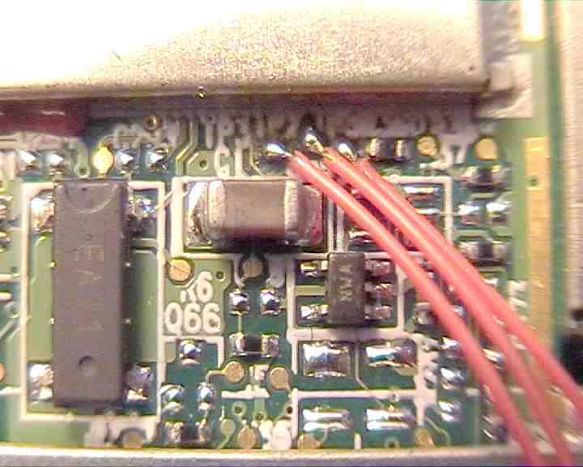
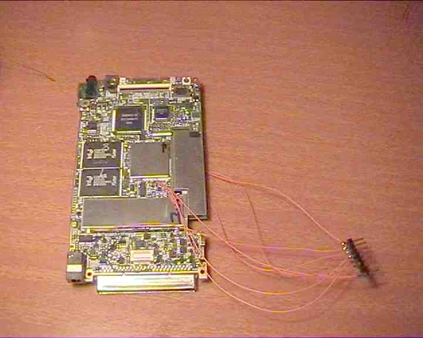
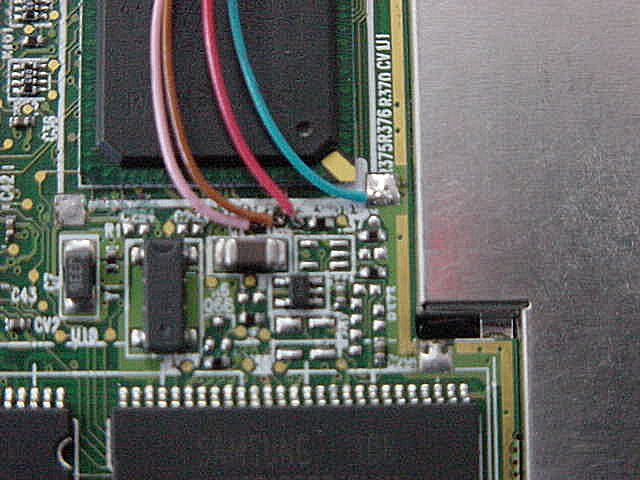
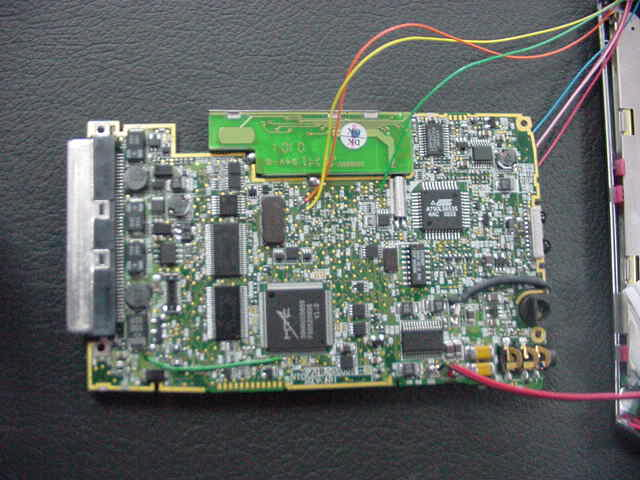

Fitting a JTAG interface to an iPAQ 3600
So you couldn't resist messing with your brand new iPAQ, tried to re-flash it and managed to turn it into a brick ?
Now you turn it on and it just sits there, silent, screen blank, just mocking you ?
Do you (think you) have the skills to take delicate, sensitive electronic appliances apart ?
...and solder connections to small contact pads you can barely see with the naked eye ?
...and put them back together ?
If the answer to all of the above it yes, never fear, help is here [cue cheesy music]
First of all, disassemble the iPAQ and remove the main board. If you wish, desolder the speaker cables.

Next turn the board with the CPU facing up. The CPU is the square object located next to the E28F640J3A120 FLASH chips as seen below. It is covered with a metallic shield.

Take a closer look at the bottom edge of the CPU and locate the test points, ordered left to right as TP3 (TDO), TP2 (TDI) and TP5 (TRST)

Carefully solder some suitable wires to the test points.

Find a good ground connection and solder a wire to it too.

Turn the board over and locate the 3.686Mhz crystal.

Just above it, you’ll find test points TP1 (TCK) and TP4 (TMS)

Solder some suitable wire to these test points too.

Further up on the same side of the board is a metal can crystal, located just below the Atmel AT90LS8535 microcontroller.
This is the VCC connection, so solder a wire to the pad shown below.

Eventually you end up with a bunch of wires hanging loose of the iPAQ board.

You could, if desired, solder a berg strip or other suitable connector for easy attachment to the JTAG board.

If you don’t have a JTAG adapter, Xilinx publishes the schematic of a PC parallel port to JTAG adapter that you can easily build yourself.
I personally ended up using the simplest interface of all, about five resistors (any value 100 - 330 ohm should do) arranged as follows:

Finally you need some spiffy software to do the programming. I used jtag-0.2.1 which I set up under cygwin on my Windows XP system.
I won't go into the software setup here, however jtag-0.2.1 needs a couple of small mods before it can program the iPAQ.
Download flash.c and sa1110.c and replace the corresponding files in jtag-0.2.1 source tree before compiling.
Happy Flashing
Additional pictures of the final JTAG connector permanently fitted to my development iPAQ.
These were taken after desoldering the metal shield covers off the CPU and DRAM.
Pink: TDO, Brown: TDI, Red: TRST, Blue: GND

Orange: TCK, Yellow: TMS

Green: VCC

All cables soldered.

Final assembly. I chose to pull the cables out of the stylus hole as anywhere at the bottom interferes with the docking station seating.
There's no other suitable hole and I wasn't about to drill one :)
This means the stylus will not plug in (small sacrifice) but on the plus side, the casing around the stylus hole, clamps the wires in place so you can't accidentally tug on them too hard.

Below is an actual session programming a bootloader into a fully erased iPAQ.